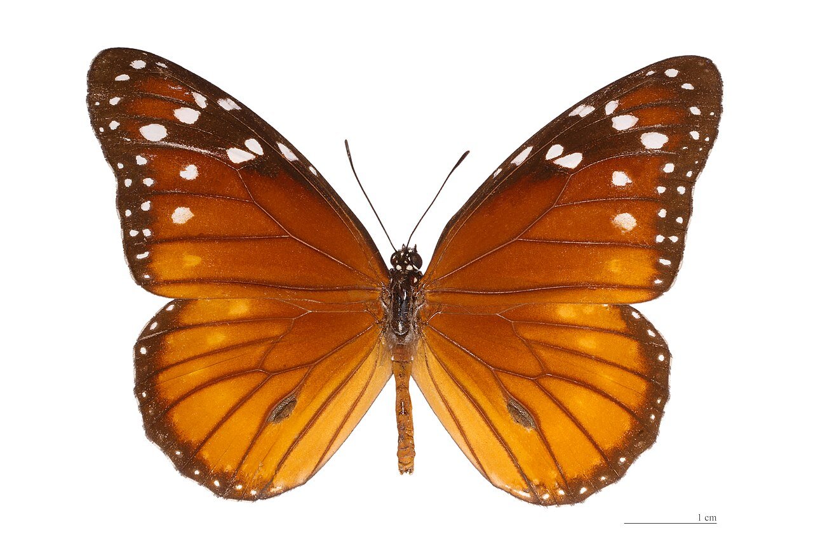

Nombre científico: Danaus eresimus
La mariposa soldado es una especie cercana a la mariposa monarca, reconocida por sus alas marrones con líneas y manchas naranjas y blancas.
Coloración: Marrón oscuro con marcas naranjas y algunas manchas blancas en el borde de las alas.
Alimentación: Las orugas se alimentan principalmente de plantas del género Asclepias (algodoncillo), al igual que otras del grupo.
Hábitat: Zonas abiertas y cálidas como campos, pastizales y bordes de bosques en América Central, el Caribe y parte de América del Sur.
Importancia ecológica: Participa en la polinización y forma parte del equilibrio natural como presa de depredadores adaptados.
